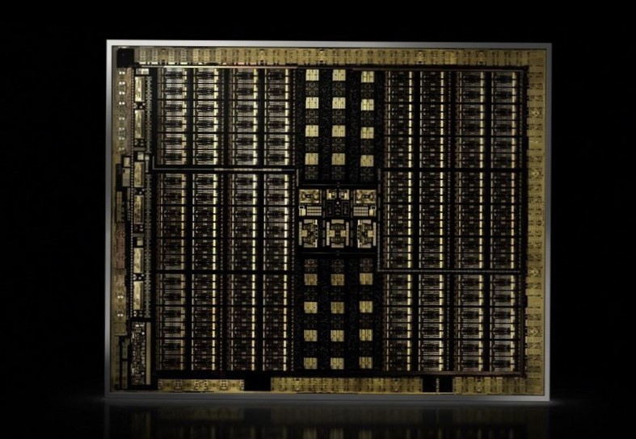
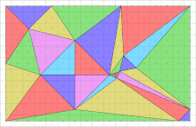
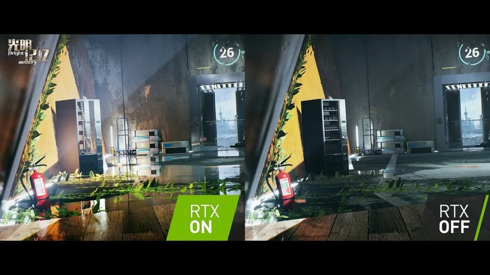
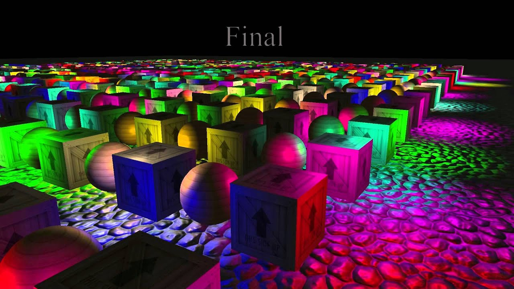
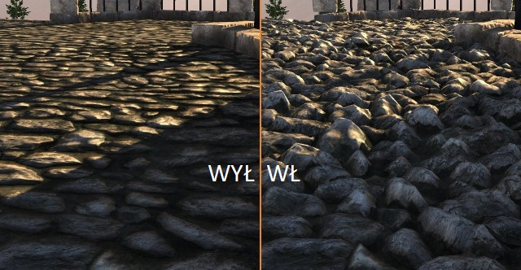
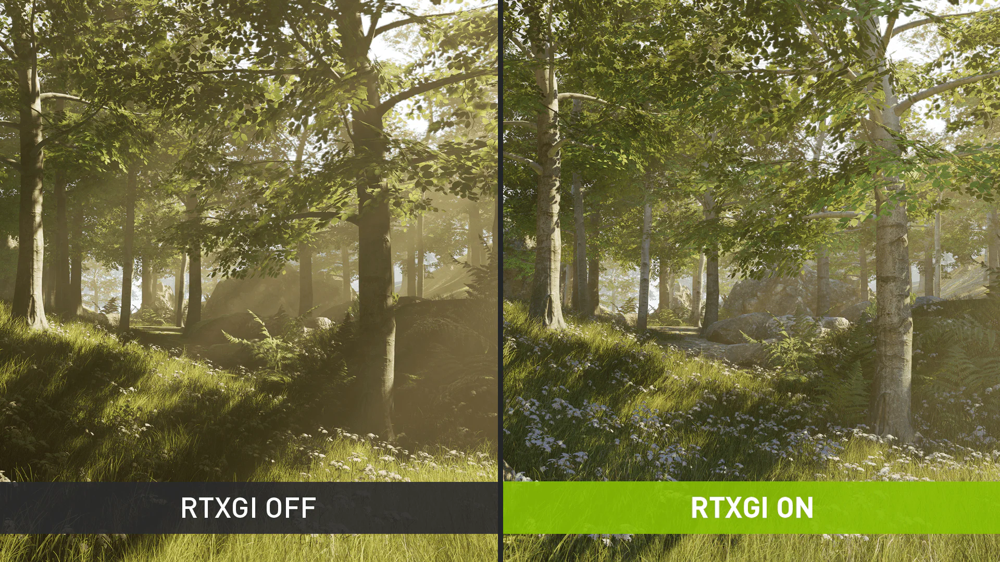
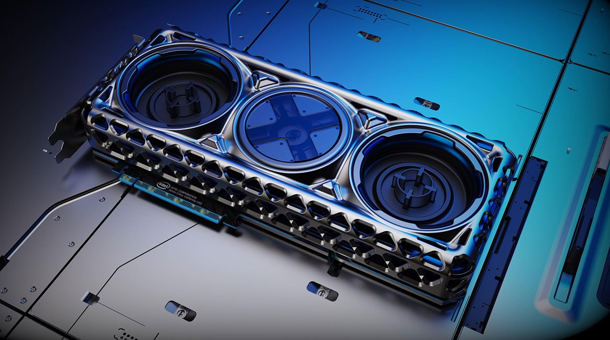

Czym są karty graficzne?
Karty graficzne to urządzenia elektroniczne wkomponowane w komputery, które służą do przetwarzania grafiki i wideo. Zajmują się generowaniem i wyświetlaniem obrazów na ekranie komputera, poprawiając jakość i szybkość renderowania grafiki w porównaniu z zintegrowanymi układami graficznymi w procesorach. Karty graficzne wykorzystują dedykowane procesory graficzne i pamięć VRAM do przetwarzania i przechowywania obrazów. Są niezbędne do uruchamiania gier, edycji wideo, projektowania graficznego i innych zadań związanych z grafiką i wideo.
Zastosowania kart graficznych
Karty graficzne mają wiele zastosowań, zarówno w kontekście użytku osobistego, jak i zawodowego. Poniżej przedstawiamy kilka przykładów:
- Gry komputerowe: Karty graficzne są wykorzystywane do wyświetlania grafiki w grach komputerowych. Dzięki wydajnym kartom graficznym można uzyskać wysoką jakość grafiki oraz płynne animacje.
- Grafika komputerowa: Karty graficzne są stosowane do obróbki i renderowania grafiki, takiej jak animacje, filmy, grafika 3D oraz zdjęcia.
- Obliczenia naukowe: Karty graficzne są wykorzystywane do przyspieszenia obliczeń naukowych i badawczych, takich jak modelowanie matematyczne, symulacje fizyczne i chemiczne, analiza danych, uczenie maszynowe i sztuczna inteligencja.
- Projektowanie graficzne: Karty graficzne są stosowane do projektowania graficznego, takiego jak projektowanie stron internetowych, projektowanie logotypów, tworzenie animacji i innych kreatywnych projektów.
- Praca z wideo: Karty graficzne umożliwiają edycję wideo w wysokiej rozdzielczości, takiej jak 4K lub 8K, oraz przyspieszają proces renderowania wideo.
- Kryptowaluty: Karty graficzne są również wykorzystywane do wydobywania kryptowalut, takich jak Bitcoin czy Ethereum.
Architektura kart graficznych
Architektura kart graficznych odnosi się do sposobu, w jaki są zaprojektowane karty graficzne, czyli urządzenia, które generują i wyświetlają obraz na ekranie komputera.

Każda architektura ma swoje własne cechy i zalety, a także ograniczenia, które wpływają na wydajność karty graficznej. Poniżej przedstawiamy krótkie omówienie kilku popularnych architektur kart graficznych:
- Architektura NVIDIA CUDA to jedna z najbardziej popularnych architektur, która wykorzystuje tzw. przetwarzanie równoległe w celu przyspieszenia obliczeń związanych z grafiką i obliczeniami ogólnego przeznaczenia. Karty graficzne oparte na tej architekturze są często używane w zastosowaniach naukowych, a także w grach komputerowych.
- Architektura AMD Radeon to konkurencyjna architektura, która również wykorzystuje przetwarzanie równoległe. Karty graficzne oparte na tej architekturze są często wykorzystywane w grach komputerowych i zastosowaniach związanych z obróbką wideo.
- Architektura Intel Xe to stosunkowo nowa architektura opracowana przez Intela. Karty graficzne oparte na tej architekturze są zaprojektowane z myślą o zastosowaniach profesjonalnych, takich jak analiza danych i uczenie maszynowe.
- Architektura ARM Mali to architektura wykorzystywana w kartach graficznych dla urządzeń mobilnych. Karty graficzne oparte na tej architekturze są zaprojektowane z myślą o niskim poborze energii i wydajności graficznej w urządzeniach mobilnych, takich jak smartfony i tablety.
Algorytmy kart graficznych
Renderowanie na kartach graficznych opiera się na algorytmach graficznych i matematycznych, które pozwalają na szybkie wyświetlanie skomplikowanych scen 3D. Oto kilka popularnych algorytmów renderowania kart graficznych:

Rasterization - jest to najbardziej popularny algorytm renderowania kart graficznych, wykorzystywany do tworzenia obrazów 3D. Rasterization polega na konwertowaniu obiektów 3D na piksele na ekranie. Proces ten polega na wybieraniu pikseli na ekranie, do których mają być dopasowane wierzchołki obiektów 3D, a następnie wypełnieniu pikseli kolorem w oparciu o oświetlenie i inne efekty.

Ray tracin
g - jest to algorytm renderowania, który wykorzystuje symulację promieni świetlnych w celu uzyskania bardziej realistycznego wyglądu obiektów 3D. Ray tracing śledzi promienie światła od źródła światła do kamery, a następnie oblicza ich wpływ na obiekt 3D. Ten proces jest bardzo skomplikowany, ale daje bardziej realistyczne efekty, takie jak odbicia, refrakcje i cienie.

Deferred shading - jest to algorytm renderowania, który przetwarza geometrię sceny tylko raz i zapisuje informacje o oświetleniu w buforze kolorów. Następnie ten bufor kolorów jest używany do renderowania końcowego obrazu. Ta technika jest wydajna i pozwala na bardziej złożone efekty oświetlenia, takie jak odbicia, refleksje i cienie.

Tesselacja - jest to algorytm renderowania, który dzieli obiekty 3D na mniejsze części, aby uzyskać bardziej szczegółowe modele. Ta technika jest szczególnie przydatna dla obiektów, które mają zaokrąglone krawędzie, takie jak twarze i ciała postaci.

Global Illumination - jest to algorytm renderowania, który symuluje zachowanie światła w scenie 3D. Global Illumination uwzględnia odbicia, oświetlenie pośrednie i cienie, aby uzyskać bardziej realistyczny wygląd sceny. Ta technika jest bardzo skomplikowana i czasochłonna, ale daje bardzo realistyczne efekty.
Przyszłość kart graficznych
Przyszłość kart graficznych zapowiada się bardzo interesująco. Przede wszystkim, można oczekiwać, że karty graficzne będą coraz bardziej zaawansowane pod względem technologicznym i będą oferować jeszcze wyższą wydajność i większą moc obliczeniową.

Wraz z rozwojem wirtualnej i rozszerzonej rzeczywistości, karty graficzne będą odgrywać kluczową rolę w renderowaniu wizualizacji 3D oraz w interaktywnych doświadczeniach VR i AR. W tym celu, producenci kart graficznych będą oferować coraz większą liczbę portów zgodnych z interfejsem VR i AR.